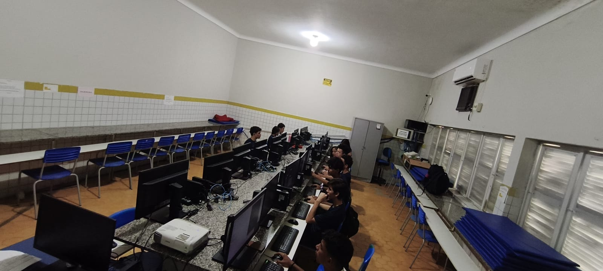

Equipamentos do Laboratório
- Computadores modernos
- Monitores LED
- Teclado e mouse
- Projetor multimídia
- Roteador de internet
Regras de Uso
- Não acessar sites impróprios
- Não instalar programas sem autorização
- Manter silêncio durante as aulas
- Não comer ou beber no laboratório
- Respeitar os colegas e professores
Cuidados de Segurança
Para garantir o bom funcionamento do laboratório, é importante seguir algumas medidas de segurança:
- Não mexer nos cabos
- Desligar corretamente os computadores
- Evitar vírus usando antivírus atualizado
- Não compartilhar senhas

Tabela de Equipamentos
| Equipamento | Quantidade | Estado |
|---|---|---|
| Computadores | 20 | Ótimo |
| Monitores | 20 | Bom |